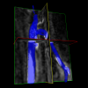
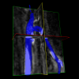
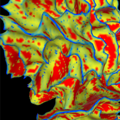

Instantly view scientific and medical imaging data in 3D.
Try the examples..
 
 

A 14 year old healthy male brain. The patient was scanned using a
structural MRI and a diffusion MRI to highlight connecting brain
fibers. Loading time: ++++View
Example
Drop files here or Select
files
-
 Fibers
Fibers
(.trk)
-
 Volumes
Volumes
(.mgh / .mgz / .nrrd / .nii
/ .nii.gz / DICOM) -
 Models
(.vtk / .stl / FreeSurfer)